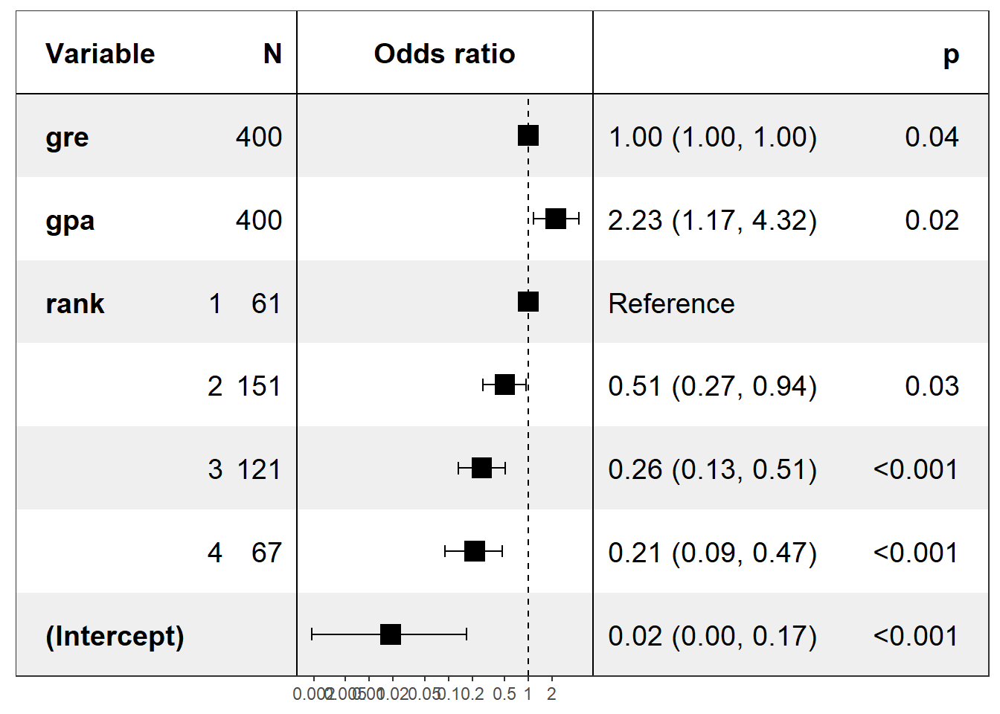
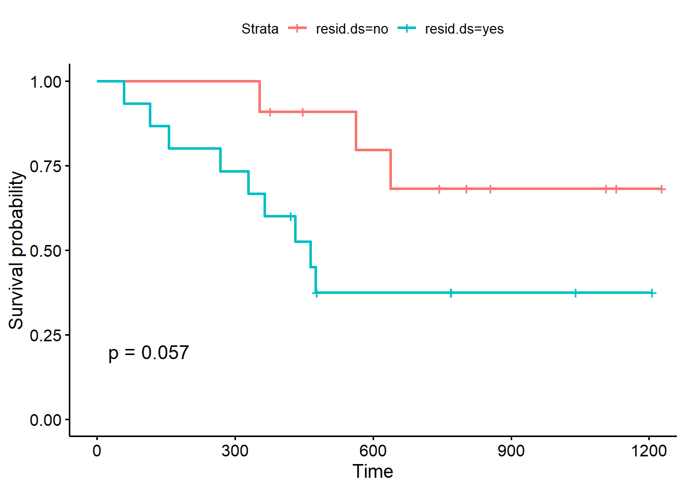

3.14 Survival Analysis
2020-05-25
3.14.1 exercises
code and comments from the professor
read data and have a look at it
# Load required packages
library(survival)
library(survminer)
library(dplyr)
data(ovarian)
glimpse(ovarian)## Rows: 26
## Columns: 6
## $ futime <dbl> 59, 115, 156, 421, 431, 448, 464, 475, 477, 563, 638, 744,...
## $ fustat <dbl> 1, 1, 1, 0, 1, 0, 1, 1, 0, 1, 1, 0, 0, 0, 0, 0, 0, 0, 0, 0...
## $ age <dbl> 72.3315, 74.4932, 66.4658, 53.3644, 50.3397, 56.4301, 56.9...
## $ resid.ds <dbl> 2, 2, 2, 2, 2, 1, 2, 2, 2, 1, 1, 1, 2, 2, 1, 1, 2, 1, 1, 2...
## $ rx <dbl> 1, 1, 1, 2, 1, 1, 2, 2, 1, 2, 1, 2, 2, 2, 1, 1, 1, 1, 2, 2...
## $ ecog.ps <dbl> 1, 1, 2, 1, 1, 2, 2, 2, 1, 2, 2, 1, 2, 1, 1, 2, 2, 1, 1, 1...| ovarian | R Documentation |
Ovarian Cancer Survival Data
Description
Survival in a randomised trial comparing two treatments for ovarian cancer
Usage
ovarian
Format
| futime: | survival or censoring time |
| fustat: | censoring status |
| age: | in years |
| resid.ds: | residual disease present (1=no,2=yes) |
| rx: | treatment group |
| ecog.ps: | ECOG performance status (1 is better, see reference) |
Source
Terry Therneau
References
Edmunson, J.H., Fleming, T.R., Decker, D.G., Malkasian, G.D., Jefferies, J.A., Webb, M.J., and Kvols, L.K., Different Chemotherapeutic Sensitivities and Host Factors Affecting Prognosis in Advanced Ovarian Carcinoma vs. Minimal Residual Disease. Cancer Treatment Reports, 63:241-47, 1979.
# Change data labels
ovarian$rx <- factor(ovarian$rx, levels = c("1", "2"), labels = c("A", "B"))
ovarian$resid.ds <- factor(ovarian$resid.ds, levels = c("1", "2"), labels = c("no", "yes"))
ovarian$ecog.ps <- factor(ovarian$ecog.ps, levels = c("1", "2"), labels = c("good", "bad"))3.14.1.1 Apply one of the techniques given in this course to answer the following questions: do
patients benefit from therapy regimen A as opposed to regimen B?
Fit survival data using the Kaplan-Meier method. A + behind survival times indicates censored data points.
## [1] 59 115 156 421+ 431 448+ 464 475 477+ 563 638 744+
## [13] 769+ 770+ 803+ 855+ 1040+ 1106+ 1129+ 1206+ 1227+ 268 329 353
## [25] 365 377+The next step is to fit the Kaplan-Meier curves. You can easily do that by passing the surv_object to the survfit function. You can also stratify the curve depending on the treatment regimen rx that patients were assigned to. A summary() of the resulting fit1 object shows, among other things, survival times, the proportion of surviving patients at every time point, namely your p.1, p.2, … from above, and treatment groups.
## Call: survfit(formula = surv_object ~ rx, data = ovarian)
##
## rx=A
## time n.risk n.event survival std.err lower 95% CI upper 95% CI
## 59 13 1 0.923 0.0739 0.789 1.000
## 115 12 1 0.846 0.1001 0.671 1.000
## 156 11 1 0.769 0.1169 0.571 1.000
## 268 10 1 0.692 0.1280 0.482 0.995
## 329 9 1 0.615 0.1349 0.400 0.946
## 431 8 1 0.538 0.1383 0.326 0.891
## 638 5 1 0.431 0.1467 0.221 0.840
##
## rx=B
## time n.risk n.event survival std.err lower 95% CI upper 95% CI
## 353 13 1 0.923 0.0739 0.789 1.000
## 365 12 1 0.846 0.1001 0.671 1.000
## 464 9 1 0.752 0.1256 0.542 1.000
## 475 8 1 0.658 0.1407 0.433 1.000
## 563 7 1 0.564 0.1488 0.336 0.946You can examine the corresponding survival curve by passing the survival object to the ggsurvplot function. The pval = TRUE argument is very useful, because it plots the p-value of a log rank test as well!

By convention, vertical lines indicate censored data, their corresponding x values the time at which censoring occurred.The log-rank p-value of 0.3 indicates a non-significant result if you consider p < 0.05 to indicate statistical significance. In this study, none of the treatments examined were significantly superior, although patients receiving treatment B are doing better in the follow-up. What about the other variables?
Examine prdictive value of residual disease status
fit2 <- survfit(surv_object ~ resid.ds, data = ovarian)
ggsurvplot(fit2, data = ovarian, pval = TRUE)
The Kaplan-Meier plots stratified according to residual disease status look a bit different: The curves diverge early and the log-rank test is almost significant. You might want to argue that a follow-up study with an increased sample size could validate these results, that is, that patients with positive residual disease status have a significantly worse prognosis compared to patients without residual disease.
3.14.1.2 Do patients’ age and fitness significantly influence the outcome? Is residual disease a prognostic biomarker in terms of survival?
Cox proportional hazards models allow you to include covariates. You can build Cox proportional hazards models using the coxph function and visualize them using the ggforest. These type of plot is called a forest plot. It shows so-called hazard ratios (HR) which are derived from the model for all covariates that we included in the formula in coxph. Briefly, an HR > 1 indicates an increased risk of death (according to the definition of h(t)) if a specific condition is met by a patient. An HR < 1, on the other hand, indicates a decreased risk.
Fit a Cox proportional hazards model
fit.coxph <- coxph(surv_object ~ rx + resid.ds + age + ecog.ps, data = ovarian)
ggforest(fit.coxph, data = ovarian)Every HR represents a relative risk of death that compares one instance of a binary feature to the other instance. For example, a hazard ratio of 0.4 for treatment groups tells you that patients who received treatment B have a reduced risk of dying compared to patients who received treatment A (which served as a reference to calculate the hazard ratio). As shown by the forest plot, the respective 95% confidence interval is 0.11 - 1.4 and this result is no significant.
Using this model, you can see that the age variable significantly influence the patients risk of death in this study. This could be quite different from what you saw with the Kaplan-Meier estimator and the log-rank test. Whereas the former estimates the survival probability, the latter calculates the risk of death and respective hazard ratios. The results of these methods yield can differ in terms of significance.